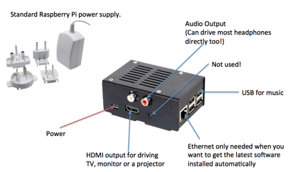

Inside the box is a Raspberry Pi computer and plugged into this is an audio output card from HiFiBerry. The case is metal and gives a rugged and durable device.
The software that runs the entire process is hosted on a micro SD card that slots into the Raspberry Pi. By plugging in an Ethernet cable into the front socket and connecting it to the Internet, the software will upgrade itself automatically. Alternatively, the latest version can be downloaded and copied to the USB device used for the music and this will be installed when the Tanda Player next starts up.
All database files and the users own music files are stored outside of the Tanda Player on a USB mounted device. This can be a removable hard disk (this should be powered and must not take power from the USB socket) but this is not recommended - the preference is to use a physically small but high quality memory stick as these are tiny and less likely to break and can be left connected all the time even when not in use. The device must be let in FAT32 format.
The power supply is connected to the small socket shown bottom left of the above image. The audio output socket on the bottom right of the image is not used. Audio output is only provided through the red and white sockets shown.
A uDMX lighting cable adaptor can be plugged in to any of the USB sockets but only one per Tanda Player. Likewise, the slave devices.
The Tanda Player and the slave devices have a HDMI socket on them and internally Google’s Chrome Browser is running and viewing the Display Board web page. Therefore, simply connecting a TV or projector to the HDMI port before powering up the Tanda Player should put the display information on the connected device.
NOTE that all cables and memory sticks for the Tanda Player must be in place before you connect the power. Likewise, some HDMI devices must be switched on first so that as the Tanda Player starts up and has a “look around” it can see the connected devices.